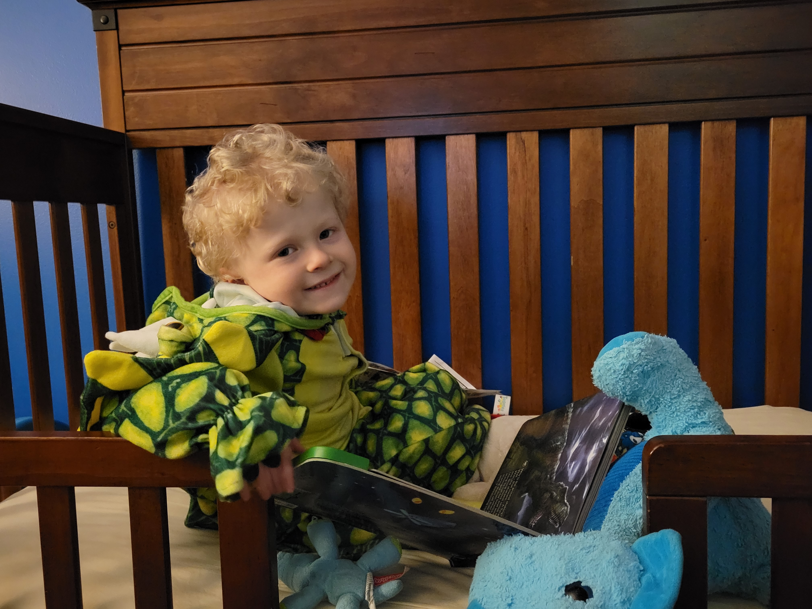
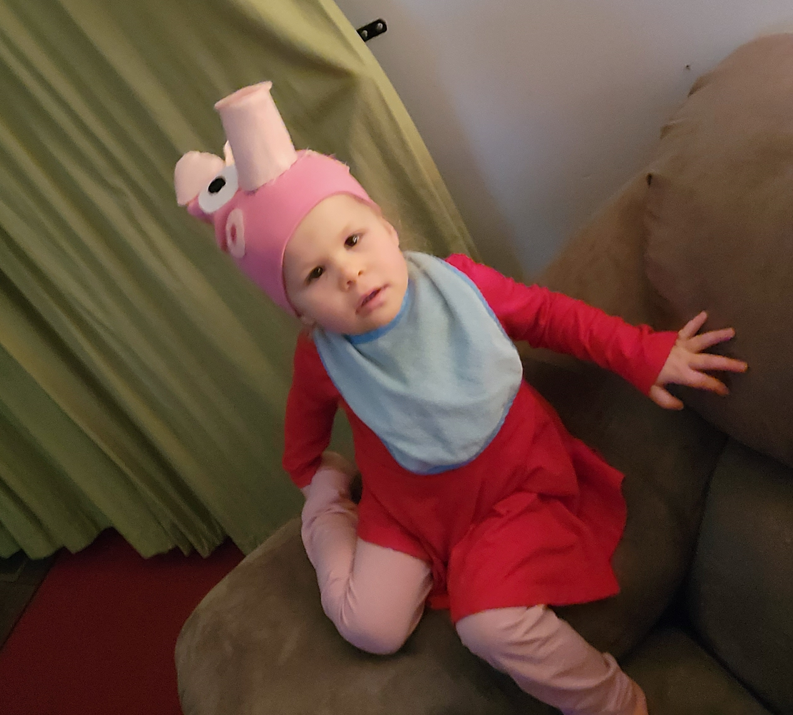

Home
This is son Henry. He is going to be 6 in April. His favorite color is green. This years Halloween costume was a Triceratops. He loves reading especially Little Critter books by Mercer Mayer. He also likes dinosaurs, his magic tracks set, and constructive building with magnet tiles and his tinker toys. His favorite tv show is Wild Kratts.
This is my daughter Annalyn. She is 2 and was born at 11:59 pm on September 21st. She loves playdoh, coloring, and to cook in her kitchen. Nowadays, she's a daredevil that likes to climb things that are to high for herself. Her favorite tv show is Peppa Pig hence her Halloween costume.
These two are inseperable to each other. They literally spend every free minute they have playing together. When the weather is nice I take them on long walks and we park hop throughout the town and county. They also enjoy jumping on the tramoline, blowing bubbles, and coloring with chalk while listening to Caspar Babypants, Jim Gill, and They Might be Giants.